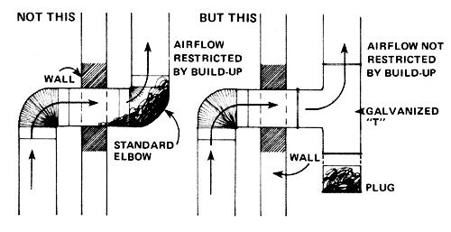
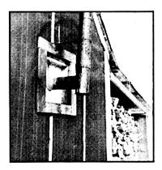

A fire in our old wood heater was just what we needed to take the nip out of last year's chilly autumn nights.
The only problem was the fact that those nights were merely chilly ... and not freezing. Which meant that our Ashley spent a good portion of its time shut down. Which, in turn, caused creosote and soot to collect in its flue during the "off" periods . . . and then burn out when the stove opened back up again. And that made more black, scaly remnants than we'd ever thought possible collect in and fall down the stovepipe. Result: The unwelcome gunk quickly piled up in the pipe's outside elbow (our Ashley is vented through the wall) . . . and choked the stove's draft down to a wheeze!
After tearing the stovepipe all apart, cleaning it out, and shoving the whole mess back together again several times, we decided that there must be an easier way. There is!
I finally drove down to the nearest hardware store and purchased a galvanized "T" section of stovepipe for the outrageous price of $5.00. Later, at home, I removed the old outside elbow from our heater's vent, replaced it with the "T" ... and we scrounged up an old stovepipe plug to cap the open (lower) end of the"T".
Now when burned-out creosote and soot fall back down our Ashley's vent, they have a "trap" to fall into. And, when the gunk finally stacks up so high in the trap that it begins to choke off the heater's draft . . . either my wife or 1 just step outside, "pull the cork", and dump it. It's then a simple matter to tap the flue a couple of times to make sure all the loose residue is out and slip the stovepipe plug back in place.
How's that for a quick, clean, easy solution to an age-old problem? And the price-$5.00-is (in our opinion) definitely worth the investment. --Stephen Beckett.
|
 Photo By TYRONE CORNBLATT'S |
 |
|